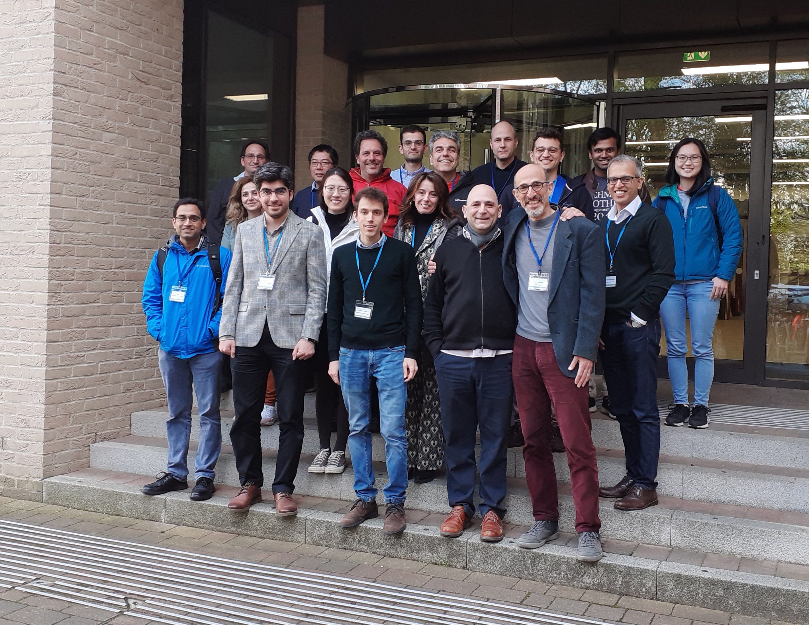

Welcome to the inaugural Cambridge Information Theory Colloquium!
We organised this one-day event, centred around four top-quality talks in information theory and related areas. In addition, there was a poster session from doctoral students and postdoctoral researchers. The main aim was to bring together UK researchers in information theory and related areas as well as friends of the UK information theory community.
Dyson Building Seminar Room, Department of Engineering, University of Cambridge, Trumpington Street, Cambridge CB2 1PZ, UK.
| Event | Time |
|---|---|
| Amos Lapidoth | 10:00 – 11:00 |
| Coffee Break | 11:00 – 11:30 |
| Antonia Tulino | 11:30 – 12:30 |
| Lunch and Poster Session | 12:30 – 14:00 |
| Mahtab Mirmohseni | 14:00 – 15:00 |
| Coffee Break | 15:00 – 15:30 |
| András György | 15:30 – 16:30 |
Transfer Learning with Pretrained Classifiers
András György, DeepMind
Abstract: We study the ability of foundation models to learn representations for classification that are transferable to new, unseen classes. Recent results in the literature show that representations learned by a single classifier over many classes are competitive on few-shot learning problems with representations learned by special-purpose algorithms designed for such problems. We offer a theoretical explanation for this behavior based on the recently discovered phenomenon of class-feature-variability collapse, that is, that during the training of deep classification networks the feature embeddings of samples belonging to the same class tend to concentrate around their class means. More specifically, we show that the few-shot error of the learned feature map on new classes (defined as the classification error of the nearest class-center classifier using centers learned from a small number of random samples from each new class) is small in case of class-feature-variability collapse, under the assumption that the classes are selected independently from a fixed distribution. This suggests that foundation models can provide feature maps that are transferable to new downstream tasks, even with limited data available. As a side result, we also establish that class-feature-variability collapse generalizes from training to test data (from the same classes), which may be of independent interest.
Based on joint work with Tomer Galanti and Marcus Hutter.
András György is a Research Scientist at DeepMind, London, UK. He received his Ph.D. from the Budapest University of Technology and Economics. He held research positions at the Institute for Computer Science and Control (SZTAKI), Hungary, and the University of Alberta, and was a faculty member at Imperial College London.
A little help goes a long way
Amos Lapidoth, ETH Zürich
Abstract: This talk will survey selected recent results on communications over additive-noise channels in the presence of a benevolent, message-oblivious, noise-cognizant, rate-limited helper.
Its first part will deal with the Shannon capacity and how it can be achieved using “flash helping”. Its second part will address other notions of capacity, such as the Erasures-Only capacity and the Listsize capacity. It will be shown that these capacities benefit greatly from help even of very low rate.
Based on collaborations with Shraga Bross, Gian Marti, and Yiming Yan.
Amos Lapidoth is Professor of Information Theory at the Swiss Federal Institute of Technology (ETH). He received his Ph.D. in Electrical Engineering from Stanford University and was subsequently Assistant and Associate Professor at the Massachusetts Institute of Technology (MIT).
Privacy in Identity and Access Management: Information Theoretic Perspective
Mahtab Mirmohseni, University of Surrey
Abstract: With the growth of cyber-physical systems, identity and access management is an essential, first line, security feature in communication systems. Acquiring user information to provide this feature might severely breach the user-privacy. In this talk, we discuss privacy-aware information-theoretic protocols for two problems in private identity and access management system, i.e., private user authentication, and private access control. In the first problem, we consider a setup consisting of a certificate authority, some verifiers, many legitimate users (provers), and an arbitrary number of attackers. Each legitimate user wants to be authenticated (using his personal key) by the verifier(s), while simultaneously staying completely anonymous (even to the verifier). On the other hand, an attacker must fail to be authenticated. Introducing an interactive information-theoretic framework for the problem, we propose achievable schemes for the finite size and asymptotic regimes and show their optimality in some cases. In the second problem, we study the attribute-based access control systems, where users with certain verified attributes will gain access to some particular data. We investigate the fundamental limits of the problem of distributed attribute-based private access control with multiple authorities, where each authority will learn and verify only one of the attributes.
Mahtab Mirmohseni is a Senior Lecturer at the University of Surrey. She received her B.Sc., M.Sc. and Ph.D. from Sharif University of Technology, where she was Assistant and Associate Professor.
A Network Evolution Story: from Communication, to Content Distribution, to Real-Time Computation
Antonia Tulino, Università degli Studi di Napoli Federico II
Abstract: In this talk, we will cover the latest insights and results in the design of models and algorithms that optimize next-generation services over cloud-integrated networks. We will begin by tracing the evolution of digital services and their ability to augment knowledge and cognition in real-time, starting with communication services and quickly moving on to content distribution services — with a particular focus on those instantiated on the wireless segment of cloud networks. Finally, we will delve into a diverse range of next-generation services and applications that have stringent real-time requirements, are resource-intensive, and latency-sensitive. Overall, the objective is to provide valuable insights on the latest advancements in end-to-end service optimization and the benefits of leveraging cloud-based networks to achieve real-time performance and enhance customer experience.
Antonia Tulino is a Professor at the Università degli Studi di Napoli Federico II. She received her Dr. Eng. degree in Electrical Engineering (summa cum laude) from the Università degli Studi di Napoli Federico II and her Ph.D. degree from Seconda Università degli Studi di Napoli.